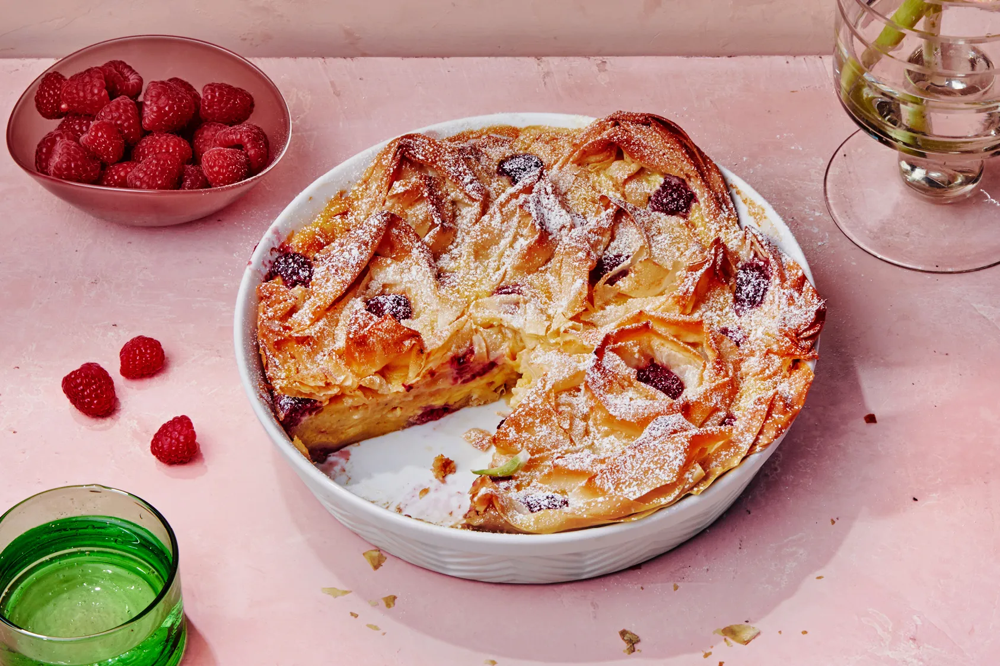

Ruffled Milk Pie

This pie is of Greek origin and consists of a milk base, eggs, vanilla, and phyllo dough. It is then decorated with icing sugar and cinnamon.
Ingredients
- 12 tablespoons melted Ghee or clarified butter, divided
- ¾ cup granulated sugar
- ½ teaspoon ground cinnamon
- ⅛ teaspoon table salt
- 14 sheets frozen phyllo dough, thawed
- 1 ¼ cups whole milk
- ¼ cup heavy cream
- 5 large eggs
- 1 teaspoon vanilla extract
- 1 tablespoon powdered sugar
Directions
- Preheat oven to 375 degrees F (190 degrees C). Brush 1 tablespoon butter in bottom and up sides of a 9 1/2-inch deep dish pie plate.
- Combine sugar, cinnamon, and salt in a small bowl.
- Place 1 sheet of phyllo dough on a cutting board or clean work surface; brush butter over 1 side. Carefully scrunch up phyllo by pushing the short sides towards another to create a rope, then loosely wrap into a coil. Place in the center of the prepared baking dish. Repeat with remaining phyllo sheets and butter, placing and forming around the center coil to form a concentric circle, packing them in tightly. Sprinkle 2 tablespoons of the spiced sugar mixture on top.
- Bake in the preheated oven until golden, about 25 minutes. Remove from oven and reduce oven temperature to 325 degrees F (165 degrees C).
- While phyllo bakes, heat milk and cream in a small saucepan over medium heat until it just begins to boil. Remove from heat.
- Whisk together eggs, vanilla, and remaining spiced sugar mixture in a bowl; gradually add hot milk, whisking constantly, until combined. Immediately pour spiced milk over phyllo in the baking dish and return to the oven.
- Bake until custard is just set, 20 to 25 minutes. Dust with powdered sugar. Serve warm or at room temperature.